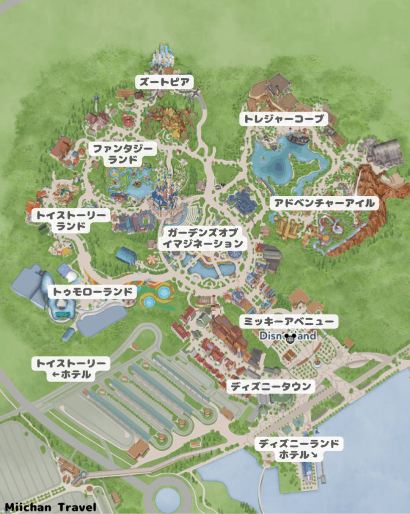

🗺️ パークマップ

🕒 ショーの時刻は数日前に公開される直近日程を参考にした仮の時刻です。来園数日前に公式サイトで最新の時刻に更新してください。
📐 このタブの待ち時間は、記録時点（9月下旬）の実測データを混雑指数33%相当と仮定し、11/6(金)の予想混雑指数57%（Magic Tips調べ）に合わせて全体を57÷33倍にスケーリングした推定値です。実測ではなくあくまで概算なので、目安として見てください。
🌅 開園〜9:00頃：本当に空いている時間
🚀 最優先ターゲット（ピーク時分以上・ここで潰さないと1日中高止まり）
☀️ 9:00〜11:00頃：混雑が急上昇する過渡期
🎢 ピーク時分・プラトー入り前に片付けておきたい
🌙 20:00頃以降：ここでようやく空き始める
✨ 閉園に向けて下がる時間帯
- 19-20時台→20-21時台にかけて下がり始める（トロンで149→95分、七人のこびとで109→85分など）
- 日中混んでいた人気ライドの再チャレンジ枠
- ライトアップされたお城・パーク全体の雰囲気
- 花火・ナイトショー鑑賞のためのエリア確保
🕐 いつ行ってもOK
😌 ピーク時でも分未満・実測ではほぼ終日フラット。上の4区分とは別枠で、朝イチでも夜でも空いてるタイミングに挟み込んでOK
📊 1時間ごとの平均待ち時間の目安
← 横にスクロールできます
🗓️ 予定表（下書き）
- 6:00ホテル発？
- 6:30並び始める
- 7:30アーリー入場
- 7:50RCレーサー
- 8:10ウッディのラウンドアップ or スリンキードッグ
- 8:40ジェットパックス？
- 9:10ピーターパン空の旅
- 9:40カリブの海賊
- 10:40昼ごはん
- 11:30アドベンチャーアイル探索
- 12:30アリスやワンスなど散歩
- 13:30七人のこびと？（DPA）
- 14:00また散歩？ピクサー展？カリブのショー？
- 15:00トロン（DPA）
- 16:00ズートピア（Qラインみること考え通常？）
- 18:00ヴォヤッジとか？ ～ちなみに実際はさらにショーとかもプラスでいくかもだし分かりまへん。～
- 21:15イルミネイト！